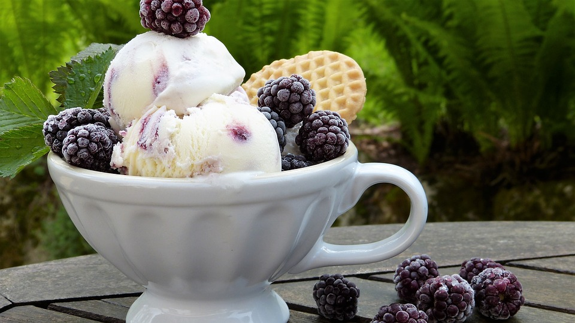

Gelato

Description
Basic Gelato Recipe. This recipe may be used as a base for your favorite flavors. Try adding vanilla, shaved chocolate or your favorite fruits. Experiment with desired flavors!
Ingredients
- 2 cups milk
- 1 cup heavy cream
- 4 egg yolks
- 1/2 cup sugar
Steps
- In a medium saucepan, mix milk and cream. Warm until foam forms around the edges. Remove from heat.
- In a large bowl, beat the egg yolks and sugar until frothy. Gradually pour the warm milk into the egg yolks, whisking constantly. Return mixture to saucepan; cook over medium heat, stirring with a wooden spoon until the mixture gels slightly and coats the back of the spoon. If small egg lumps begin to show, remove from heat immediately.
- Pour the mixture through a sieve or fine strainer into a bowl. Cover, and chill for several hours or overnight.
- Pour the mixture into an ice cream maker, and freeze according to the manufacturer's instructions. Transfer to a sealed container, and freeze until firm. If the gelato is too firm, place it in the refrigerator until it reaches the desired consistency.